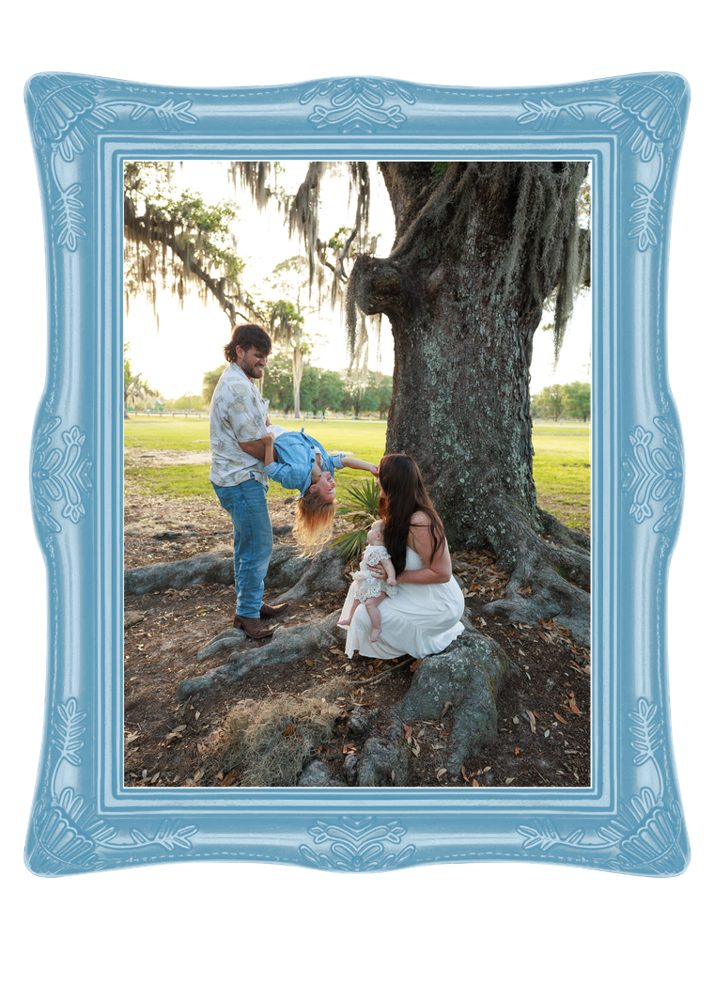
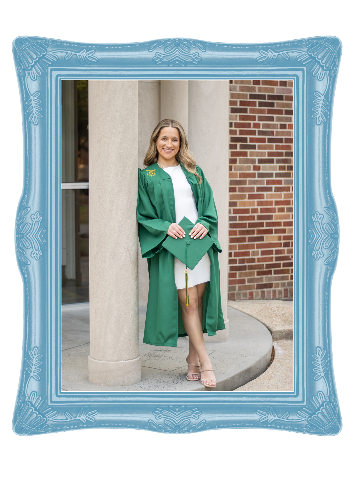
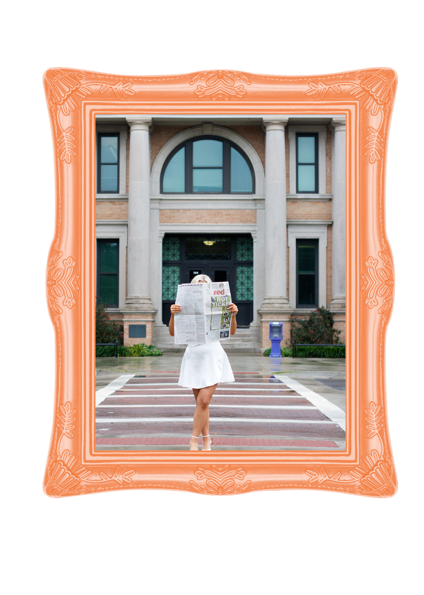
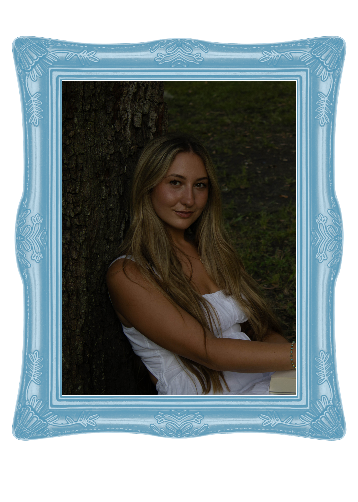

"Coral did my casual graduation photos, and I genuinely couldn’t be happier with how everything turned out. The results were absolutely STUNNING—even better than I imagined. She was so flexible with my vision and really listened to what I wanted, while also giving professional guidance that took everything to the next level. The entire session felt so comfortable, easy, and honestly just really fun, which made a huge difference. You can tell she truly cares about her work and the people she’s photographing. The final photos completely speak for themselves—I’ll be cherishing them forever!"
Emily
"We had the best experience with Coral! She somehow worked her magic capturing our very wild toddler and our tiny baby—no small task. The whole session felt easy and fun, and the photos turned out absolutely beautiful. We’re so grateful to have these memories captured so perfectly. Highly recommend her to anyone needing family photos!"
Jay + Kayla
"We are absolutely in love with our engagement photos! Coral made us feel comfortable throughout the session and captured the most authentic, beautiful moments between us. We truly could not have trusted anyone more to capture such a special season in our lives. If you’re looking for a photographer who is fun, talented, and incredibly gifted at bringing out the most genuine version of yourself, we cannot recommend Coral enough. Thank you for giving us memories we will cherish and photos we will have for a lifetime."
Elly + Dalton
"I had sooooo much fun taking pictures with coral. She’s very detail oriented and delivers high pictures super quickly. I cannot recommend her enough!"
Maddie
I look forward to hearing from you and helping you create memories that will last a lifetime.
Get In Touch